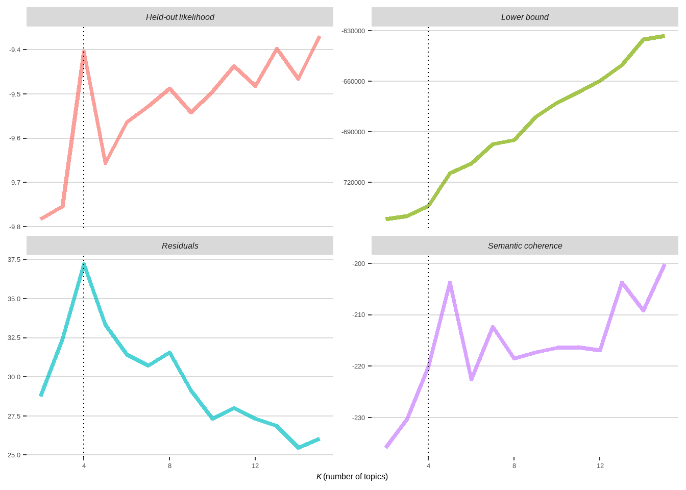

![]()
flowchart LR
A[Text Data]-->|lac|B[Tokens]
B -->|tf-idf|C[Remove stopwords]
C --> |One-Hot Encoding|D[Document-Term Matrix]
The workflow of our text analysis is as follows:
flowchart LR
A[Document-Term Matrix]-->|stm|B[Detect the number of topics]
1 Load packages and data
Execute install.packages("pacman") to install the pacman package, enabling efficient package management.
Have a look at our sample data:
2 Tokenization
2.1 Lexical Analysis of Chinese (LAC)
We will utilize the lac for word segementation, compared to ohter schemes, lac is rather well in entity informatino extraction.
Nevertheless, lac only has a Python version. We can call Python from R using reticualte package.
Before that, please install python==3.86 and then execute !pip install lac to install lac.
Our tokenzier based on the lac is as follows:
Show the code
reticulate::use_python("C:/Users/xhuangcb/anaconda3/envs/pytorch_gpu/python.exe") # your python location
LAC <- reticulate::import("LAC")
lac_seg <- LAC$LAC(mode = "seg")
lac_analysis <- LAC$LAC(mode = "lac")
tokenizer <- \(string, analysis = FALSE, progress = TRUE, min = 1) {
if (progress == TRUE) {
bar <- list(
format = "Processing: {cli::pb_current} {cli::pb_bar} {cli::pb_percent} Rate: {cli::pb_rate} ETA: {cli::pb_eta}"
)
} else {
bar <- FALSE
}
if (analysis == FALSE) {
map(
string,
\(x) {
if (!is.na(nchar(x))) {
if (nchar(x) > 1) {
tokens <- lac_seg$run(x)
tokens <- tokens[nchar(tokens) > min]
return(tokens)
}
}
},
.progress = bar
)
} else {
map(
string,
\(x) {
if (!is.na(nchar(x))) {
if (nchar(x) > 1) {
tokens <- lac_analysis$run(x)
names(tokens[[1]]) <- tokens[[2]]
tokens[[1]] <- tokens[[1]][nchar(tokens[[1]]) > min]
return(tokens[[1]])
}
}
},
.progress = bar
)
}
}2.2 Word Segementaion
Use our tokenizer to perfrom word segementation.
2.3 Acquire stopwords
Use TF-IDF algorithm to detect the stopwords.
Show the code
tfidf <- data_processed %>%
unnest_dt(words) %>%
count_dt(id, words, sort = TRUE) %>%
bind_tf_idf(words, id, n) %>%
arrange(tf_idf)
stopwords1 <- tfidf %>%
filter(tf_idf < 0.005) %>%
# arrange(tf_idf) %>%
# slice_head(n = 100)
pull(words) %>%
unique()
stopwords2 <- data_processed$words %>%
unlist() %>%
unique() %>%
.[str_detect(., "\\d+|[A-z]+")]
stopwords3 <- data_processed$words %>%
map(~ .[names(.) %in% c("TIME", "LOC")]) %>%
unlist() %>%
unique()
stopwords <- c(stopwords1, stopwords2, stopwords3) %>%
unique() %>%
tibble(words = .)3 Topic Modeling
3.1 Acquire Document-Term Matrix
3.2 Training
3.3 Evaluation
Show the code
heldout <- make.heldout(matrix)
find_bestK <- topic_models %>%
mutate(
exclusivity = map(topic_model, exclusivity, .progress = TRUE),
semantic_coherence = map(topic_model, semanticCoherence, matrix, .progress = TRUE),
eval_heldout = map(topic_model, eval.heldout, heldout$missing, .progress = TRUE),
residual = map(topic_model, checkResiduals, matrix, .progress = TRUE),
bound = map_dbl(topic_model, \(x) max(x$convergence$bound), .progress = TRUE),
lfact = map_dbl(topic_model, \(x) lfactorial(x$settings$dim$K), .progress = TRUE),
lbound = bound + lfact,
iterations = map_dbl(topic_model, \(x) length(x$convergence$bound), .progress = TRUE)
)
findK_figure <- find_bestK %>%
transmute(
K,
`Lower bound` = lbound,
Residuals = map_dbl(residual, "dispersion"),
`Semantic coherence` = map_dbl(semantic_coherence, mean),
`Held-out likelihood` = map_dbl(eval_heldout, "expected.heldout")
) %>%
pivot_longer(-K, names_to = "Metric", values_to = "Value") %>%
ggplot(aes(K, Value, color = Metric)) +
geom_line(size = 1.5, alpha = 0.7, show.legend = FALSE) +
facet_wrap(~Metric, scales = "free_y") +
xlab(expression(paste(italic(K), "(number of topics)"))) +
labs(
y = NULL,
# title = "Model diagnostics by number of topics",
# subtitle = "These diagnostics indicate that a good number of topics would be around 60"
) +
geom_vline(xintercept = 23, linetype = "dotted") +
ggthemes::theme_hc(base_family = "Noto Serif SC") +
theme(
axis.text.x = element_text(family = "EB Garamond"),
axis.title = element_text(family = "EB Garamond"),
strip.text = element_text(face = "italic", size = 12, family = "EB Garamond")
) It is evident that the model performs well when \(K\) is approximately 4, indicating that the optimal number of topics detected by the topic modeling algorithm from our sample dataset of 1000 documents is 4.
